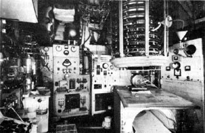
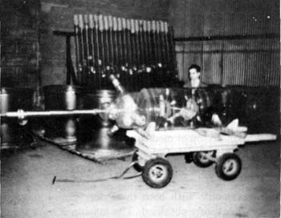
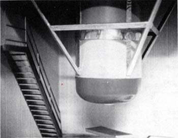

|
The Priore Machine and Phase Conjugation A Non-Technical Description of the Priore Process In the 1960's and 1970's, in France Antoine Priore built and tested electromagnetic healing machines of startling effectiveness. In hundreds and hundreds of rigorous tests with laboratory animals, Priore's machine cured a wide variety of the most difficult kinds of terminal, fatal diseases known today. Funded by the French government in the amount of several million dollars, Priore's machines concretely demonstrated a nearly 100% cure of all kinds of terminal cancers and leukemias, in thousands of rigorous laboratory tests with animals. These results were shown to medical scientists as early as 1960.Many of the experiments and tests were done by prestigious members of the French Academy of Sciences. Robert Courrier, head of the Biology Section: and Secretaire Perpetuel, personally introduced Priore's astounding results to the French Academy. The operation of the Priore machine was seemingly incomprehensible. Many orthodox French scientists—some of them world renowned—were outraged at the success of such a machine, shrilling that science had nothing to do with "black boxes:." They loudly called upon the inventor to explain the mechanism utilized by his machine, but the inventor either wouldn't or couldn't explain the curative mechanism. Priore certainly knew how to build the machine and make it work. It is debatable to this day whether anyone—Priore included —actually understood its principle of operation. Neither the French Academy nor Antoine Priore knew anything of phase conjugation at the time. In fact, the entire Western World knew nothing of phase conjugation in the 1960's when Priore was getting his finest results. At that time, only the Soviets knew of time-reversed waves. Certainly Priore's machine was impressive. Into a tube containing a plasma of mercury and neon gas, a pulsed 9.4 gigahertz wave modulated upon a carrier frequency of 17 megahertz was introduced. These waves were produced by radio emitters and magnetrons in the presence of a 1,000 gauss magnetic field. Experimental animals were exposed to this magnetic field during irradiation, and the mixture of waves (some 17 or so) coming from the plasma tube and modulating and riding the magnetic field passed through the animals' bodies. Amongst other things, a plasma can convert a transverse wave to a longitudinal wave. Also, phase conjugate (time-reversed) waves can be produced by plasmas. Priore's apparatus produced a scalar EM wave/signal with deliberately constructed, infolded components including phase conjugate waves.
 One of Priore's intermediate devices.
This device cured terminal cancers One may roughly view a cancer cell as a normal human cell gone "awry" and out of control of the body's master cellular control system. The cancerous cells, viewed as a sort of separate, parasitic group of cells, form a special kind of organism having its own master cellular control system "level," immersed in the host's biopotential.* *One strongly points out the relevance of Dr. Robert Becker's epochal experiments proving that cells can be dedifferentiated and redifferentiated electrically. Those experiments are strong indicators that the cancer cell should be capable of being reverted to its more primitive state—that of the normal cell—by electromagnetic means. There is thus a specific, constant electromagnetic "delta" that differentiates the parasitic cancerous "organism" from the normal -human cellular organism. This "delta" can be considered a sort of constant, complex-structured charge existing in the body's atomic nuclei. It's exactly as if the body biopotential had been charged up by Kaznacheyev's "death photons" for that specific cancer condition. If this cancerous "delta" (which may be rather like a complex intermodulation mix of waves)—or a frequency shifted "transform" of it to a different frequency band—is phase conjugated, a specific healing delta frequency pattern results. If phase conjugate replicas of a cancer's cell's specific "delta" frequencies are fed into the body having that cancer, the deviation of the cancer cell's master cellular control system will be "time reversed." That will return the cancer cell to control of the animal's proper master cellular control system. The cancerous cell will be immediately destroyed, or reverted back to a normal cell of the animal. A very similar process exists for just about every disease bacterium and infectious agent that attacks the body. Phase Conjugates of 'Death Photons" are "Healing Photons" The Kaznacheyev experiments in the Soviet Union proved that any cellular death and disease pattern can be induced by a specific electromagnetic pattern carried on an electromagnetic signal, if the target cells are bombarded with the pattern-carrying carrier signals for a length of time. What was not published of Kaznacheyev's work was the correspondent work showing electromagnetic reversal of cellular death and disease conditions by irradiating the diseased cell cultures by phase conjugate replicas of the pattern-carrying induction signal.In simplified terms, if an action in forward time induces a condition, then the time-reversal of that action will reverse the condition. The concept is almost laughably simple. The time-reversal of an electromagnetic disease process is a specific healing process for that disease. In his device, Priore internally structured the carrier photons themselves—making them vacuum engines. He phase conjugated his vacuum engines, and then passed these time-reversed vacuum engines down and through a strong magnetic field which thoroughly penetrated all cells of the biological organism being treated. The scalar components (structured photons) representing the time-reversal of the disease were absorbed and reradiated in all the cells, "charging up" the nuclei of the atoms in the organism to some potential level of the exact "healing and reversing pattern." In the process, the cancer/leukemia pattern/charge also destroyed the cancer calls, or converted them back to normal cells as appropriate. As a highly simplified analogy, the complex signal - viewed as a scalar Fourier expansion - represented a "stress" against any abnormal cellular control system encountered and returned it to the normal cell's master cellular control system of the body. Encountering the normal control system in normal cells, it produced zero stress. Encountering the abnormal control system in tumerous cells, it produced great stress on it, reverting it to the normal control system of the body's normal cells. Thus to a normal cell the Priore signal pattern acted somewhat as a comb passing through one's hair. No interference occurred with the normal cell (one whose scalar control pattern is phase-locked to the body's master cellular control system and in phase with it). The Priore signal stimulated and "stroked" the normal cell, but did not hurt it at all. On the other hand, the scalar control pattern in and of an abnormal (cancerous) cell is out of phase with the body's master cellular control system, and is not phase-locked to it. Hence the Priore signal caused direct interference with the abnormal cell's independent scalar control system. The interference pattern constituted the reconstruction of normal energy directly in the cancerous cell, and also jammed its abnormal scalar life signal. This destroyed the cancerous cell by two mechanisms: (1) physical energy was kindled directly in the abnormal cell, causing direct mechanical damage, and (2) the cancerous cell, being an "independent living critter," had its scalar life channel (connecting its primitive "mind" to its "body") jammed and stopped. If the cancerous cell was reverted to a normal cell by the Priore stress before being destroyed, it became just a normal cell and the Priore stress had no further effect upon it. The Effect is Universally Applicable Any disease with cellular, biochemical, or genetic basis can be cured in like fashion. Priore's method, for example, was clearly shown to be able to completely reverse clogging of the arteries with fatty deposits, and to be able to lower the cholesterol level to normal, even in the presence of an abnormally high cholesterol diet. His method also showed complete mastery and cure of sleeping sickness and trypanosome-induced illnesses. Often Priore found that every cell of the body—even the hair— must be irradiated and treated ("charged up") with the signal, for the disease pattern was in every cell. The master cellular control system is holographic—the pattern (substructured potential with its dynamic, oscillating components) is in each component (each atomic nucleus, hence in each cell.) Every structural level of the body larger than the cell also has its own correlated pattern, or modulation, on the overall. A biological organism can regenerate lost limbs, for example, if it can utilize its natural recovery process in a Priore manner. Even though Priore's work was presented to the French Academy of Sciences by Robert Courrier, the prestigious head of the Biology Section, the Academy could not understand the device and its functioning. That was because the Academicians knew nothing of scalar electromagnetics, and phase conjugation, and the Priore machine was a scalar electromagnetic device using phase conjugation. In 1974, a change of local government lost Priore his government supporters. His support and funding were lost. Ironically, Priore was just completing a 4-stories-tall apparatus capable of radiating and treating entire human bodies. It would have been capable of curing cancer and leukemia in humans rather than just in laboratory rats. (His previous machines were much smaller, and only a small animal could be irradiated whole-body. In that machine Priore used a "1amp," a special section, in which 17 specific frequencies were mixed and modulated upon the 9.4 gigahertz carrier.
 The large, special, phase-conjugating plasma
tube for Priore's giant  Capping assembly for the top of Priore's
giant plasma tube device. The The machine was large enough to irradiate humans over their whole body. It should have been capable of curing cancer and leukemia in two five-minute irradiations, one week apart. While Priore was still alive, with my associates I spent nearly two years of my life in an effort to bring the Priore device to market and into the mainstream of medical research and development. Robert Whitney, Frank Golden, and Tony Gideon played the major role, going to France and negotiating directly with the Priore group and the French government. Verbal agreements with both the Priore group and with the French government were obtained. The machines were to be built, assembled, and tested in Bordeaux. Then they were to be dismantled and shipped to the purchasers—large medical research and development laboratories where they would be reassembled on site. A group of wealthy backers was going to provide the necessary millions to fund the effort. Final contracts were being drawn. Mysteriously, all funding for the project was suddenly withdrawn. Our backers were "leaned on" very hard and strongly threatened. Nothing we could do could revive the project. Priore never again recovered his funding, and later died. The machine fell into disarray and was disassembled. However, the proof that the requisite time-reversed signal can be produced, and will ride down a magnetic field, to penetrate every cell and every atomic nucleus in the body, is already in the present hard-core physics literature, if one knows where to look and how to properly interpret the work. The fact that such signals can reverse nearly every major cellular illness condition of the body also has been proven by Priore and the scientists who worked with him, and it is in the French scientific literature. The Priore-type cure for AIDS and other diseases only
requires the necessary funding and personnel to be redeveloped and
reestablished. A Non-Technical Description of the Priore Process |